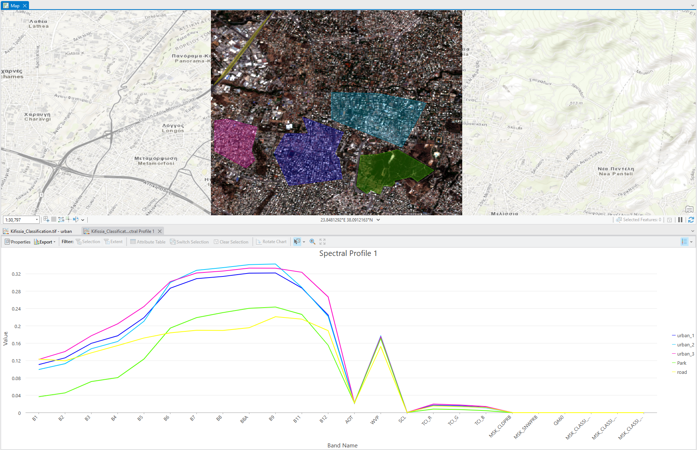

Land Cover Classification

Land cover or land use classification is the process of categorizing different types of surfaces. Common classes for this type of classification are urban areas, forests, barren lands, water bodies, and more. To make my maps, I used satelitte imaging of an area of interest which was opened in ArcGIS Pro. For this assignment, the region of interest (ROI) that I chose is my hometown, the suburb of Kifissia in northern Athens, Greece. I ran several different models, which are described below.Unsupervised pixel-based classificationThe machine's algorithm automatically groups pixels into classes based on their spectral characteristics without any required predefined training data. This classification scheme shows the difference between mildly green areas and more green areas (fig. 1). In this case, the biggest weakness is the low precision (which is most likely caused by the quality of the satellite image that was available for my ROI). It is hard to say whether points are correctly classified. However, this might just be due to the nature of the highly urban ROI that I picked.Unsupervised object-based classificationThe machine's algorithm groups similar pixels into objects (segments) based on their spectral and spatial characteristics. It then classifies these objects into categories without any prior knowledge of the classes. In my specific case, this classification scheme only has 3 classes, which makes it less confusing to interpret (fig. 2). It clearly shows the developed areas, the more barren areas (e.g. fields), and the green areas. The resolution isn’t very high but overall this one is fairly reliable I believe.Supervised pixel-based classificationThe machine's algorithm assigns class labels to each pixel based on training data provided by the user. The resolution appears to be higher for this classification scheme. The fact that it captures slightly more detail than the previous two methods makes it stand out (fig. 3). There are a few issues with incorrect classification of water bodies, but other than that, it appears to be pretty accurate. The developed, barren, and green areas are nicely defined.Normalized Difference Vegetation Index (NDVI)NDVI is a widely used metric in remote sensing to assess the density and health of vegetation. Higher NDVI values generally indicate denser and healthier vegetation, while lower values suggest sparse vegetation. This method might be the most accurate overall, and in my opinion is has worked best with this particular color scheme (fig. 4). The resolution is high and the accuracy is good. I think it is like a combination of the strengths of the supervised pixel-based classification and the unsupervised object-based classification. This one is my personal favorite. While NDVI is designed primarily to measure vegetation health and density instead of urban development, it can be indirectly used to assess urban or highly developed areas, especially in an area that has already been established to be highly urban (such as my ROI).
Fig 1: Unsupervised pixel-based classification. Dark orange colors represent buildings and developed areas, lighter yellow colors represent small fields or less developed areas, light green colors represent open fields and green areas, dark green colors represent larger green areas and parks.
Fig 2: Unsupervised object-based classification. Brown colors represent buildings and developed areas, lighter yellow colors represent fields and less developed areas, and green colors represent green areas and parks.
Fig 3: Supervised pixel-based classification.
Fig 4: NDVI with color scheme appropriate for vegetation health. Brown colors represent highly developed areas, yellow areas represent less developed (even barren) areas, and green colors represent healthy vegetation.
Fig 3: Spectral profile.